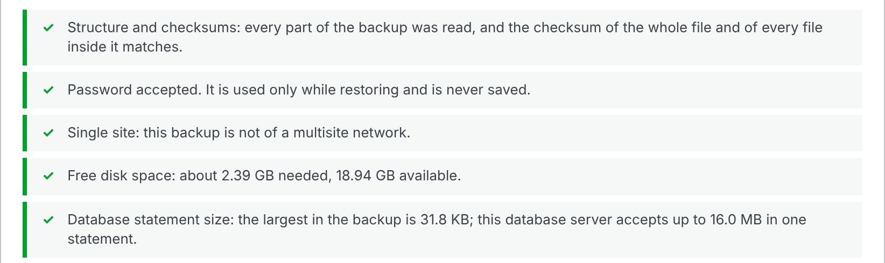
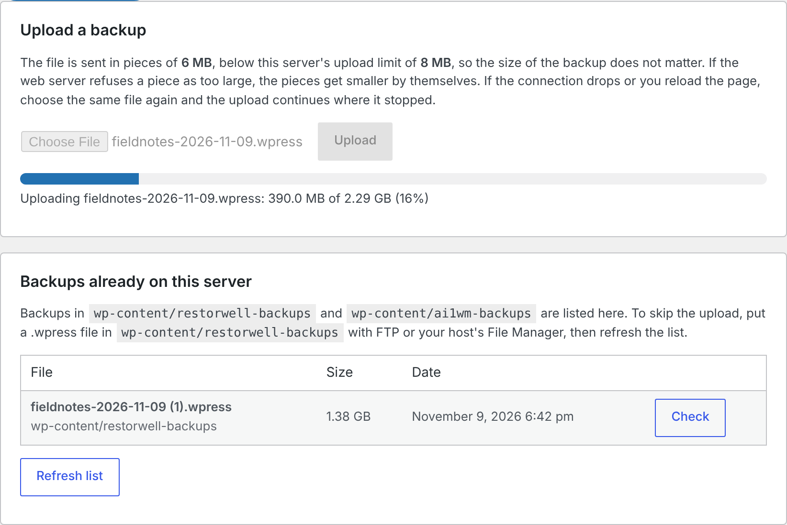
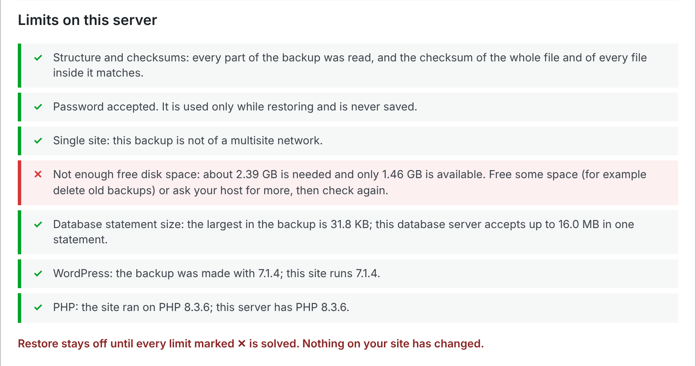
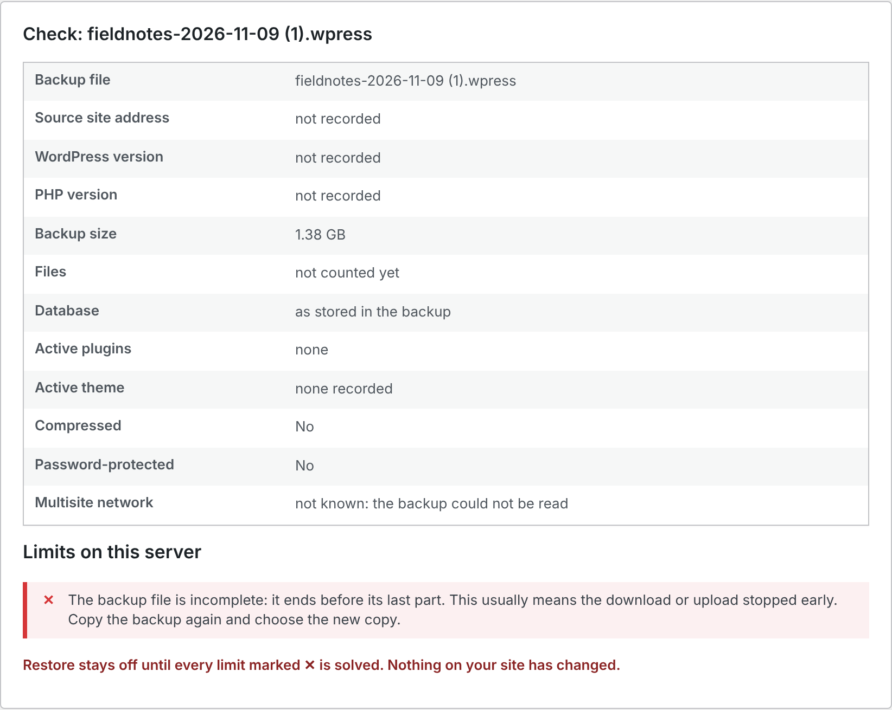
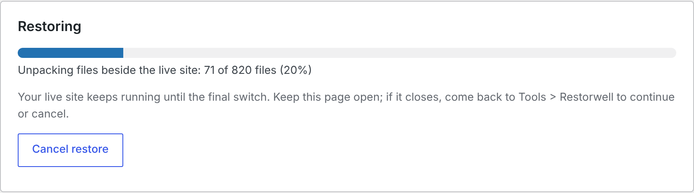
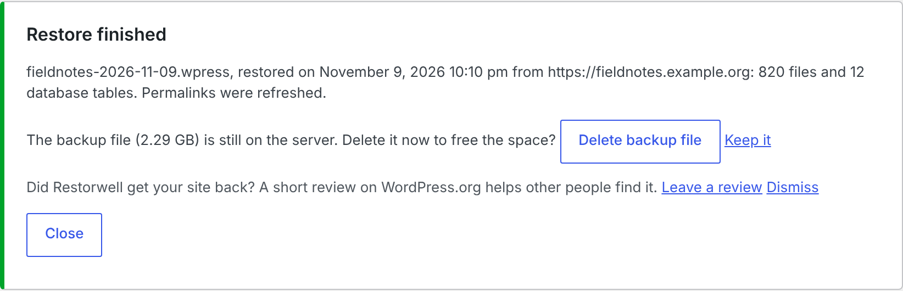
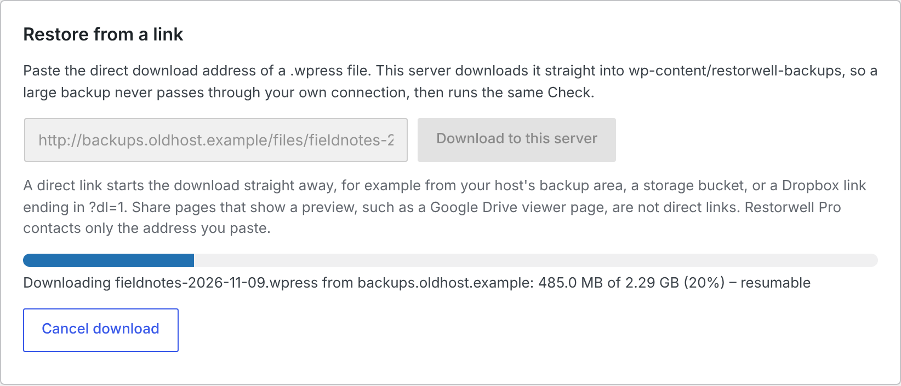
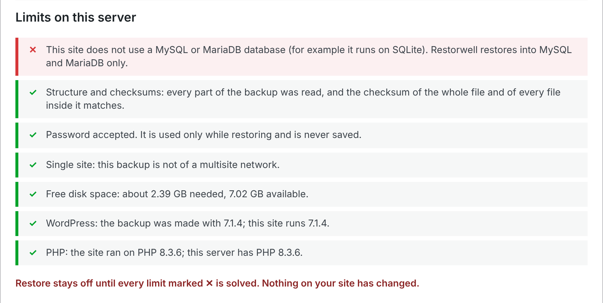

Restorwell for WordPress
Asked to pay to restore your own .wpress backup? Restorwell restores it free, past your host's upload limit, with or without a password.

- Restore your own backup, free, at any size, past your host's upload limit.
- Password-protected too. Type it; it is never saved.
- Know before anything changes: the whole file and your server's limits are checked first.
Restorwell is free: download restorwell-1.1.0.zip (69 KB).
Restorwell Pro, $19 once, unlimited sites: Buy for $19
Pro adds Restore from a link; restoring never needs it. Tested on WordPress 7.1.4, PHP 8.3.6, MariaDB 10.11, Linux, Chrome; Windows, macOS and other browsers untested (more) · GPL source included · support@ochrestack.com
Above: a 2.29 GB password-protected backup on an 8 MB host (whole report).

Other free plugins that read .wpress files
Shiftbox restores large ones, but not password-protected ones, and Poly Bright Quick Restore restores them up to 512 MB (their WordPress.org listings, read November 9, 2026). Restorwell does not make backups; for new backups, use a backup plugin whose restore is free.
How it works
1. Choose the backup. Upload it in pieces, or copy it in by FTP.

2. Check. Every byte is checksummed and each limit named. Restore stays off while anything blocks it.


3. Restore. Prepared beside your live site, switched in at the end. Fail or cancel before that, and your site is as it was.


Also free from the command line: wp restorwell check and wp restorwell restore (quick start).
Restorwell Pro: Restore from a link
Paste a direct download link: your server fetches the backup itself, resuming where it can, then runs the same Check and Restore.

$19 once, unlimited sites, Pro updates included · no renewal, no licence check · both zips in the download (Restorwell 1.1.0, Pro 1.0.1) · Polar checkout · 14-day refund
What it does not do
- Make backups, or restore multisite networks or other backup formats.
- Restore into a site on SQLite; it needs MySQL or MariaDB (below).
More limits
- A single database row larger than the database's
max_allowed_packetcannot be restored until your host raises that setting. The Check names the size to ask for, before anything changes. - If the host kills a request in the middle of the final switch, the site stays half switched until someone opens Tools > Restorwell again, which says what happened and offers Continue or Cancel.
- If the web server refuses even 64 KB pieces, copy the backup by FTP instead.
- On nginx, the backup folder's web-access block (.htaccess, web.config) does not apply: ask your host to deny
wp-content/restorwell-backups, or delete the backup after restoring (Restorwell offers to). - Pro needs a direct download link; a share page such as a Google Drive viewer page is reported as a web page. Addresses on private or local networks are refused.

How we tested
| Test | Result |
|---|---|
| 1.1.0, 8 MB / 30 s / 128 MB host: 2.29 GB password backup | 820 files, 12 tables (450 rows) match; longest request 4.0 s; peak memory 10 MiB |
| 1.0.0, same limits, nginx: 4.3 GB password backup | Restored; SHA-256 matches |
| Backup versions read | 7.113 (all kinds), 7.101 (password), 7.0, 7.40, 7.62, 7.80, 7.100 (plain) |
Versions and what is untested
On 1.1.0, behind nginx refusing bodies over 1 MB, the pieces got smaller after HTTP 413 and the upload completed. The test suite (131 tests) passed on 1.1.0 with WordPress 7.1.4, PHP 8.3.6 and MariaDB 10.11.14 on Linux; uploads were driven in Chrome. Version 1.0.0 also passed on WordPress 6.5.14, PHP 7.4.33 and MySQL 8.0; that matrix has not been re-run on 1.1.0. Requires WordPress 6.5 or later and PHP 7.4 or later (64-bit for backups over 2 GB), with OpenSSL for password-protected backups and bz2 for bzip2 ones. Not tested: servers on Windows or macOS; Apache, LiteSpeed and IIS; browsers other than Chrome; password-protected backups from versions 7.0 to 7.100. Timings come from a fast test machine: they show each request stays short, not how fast your host is.
How the images on this page were made
Every image is a capture from Google Chrome 157 under a virtual display, of a real WordPress 7.1.4 served by PHP 8.3.6's built-in server (8 MB upload limit, 30-second requests, 128 MB memory) on MariaDB 10.11, with Restorwell 1.1.0 and Pro 1.0.1. The backup is our demo blog, Hollin Marsh Field Notes (16 posts, 2 pages, the 36 CC0 photographs that ship with Twenty Twenty-Five and 10 videos made from them), exported with All-in-One WP Migration 7.113 with a password and gzip: 2.29 GB. The incomplete file is that backup cut off at 60 %. Settings from our test suite: the free disk space was reported as 1.46 GB for the disk-space image; restore steps and Pro's download pieces were made smaller so the progress could be caught on a fast machine; and Pro was allowed to reach the second web server, which runs on the same machine (it normally refuses local addresses). The SQLite image is from a second WordPress on the SQLite Database Integration plugin 3.1.3.
Details
- Privacy: the free plugin makes no network request; Pro contacts only the address you type.
- Install: the quick start. Support: support@ochrestack.com.